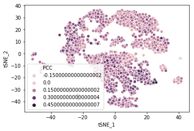
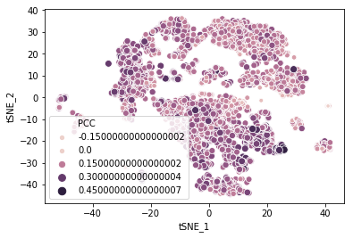

File "C:\Users\libin\Anaconda3\lib\site-packages\pandas\core\frame.py", line 2692, in _getitem_column
return self._get_item_cache(key)
File "C:\Users\libin\Anaconda3\lib\site-packages\pandas\core\generic.py", line 2486, in _get_item_cache
values = self._data.get(item)
File "C:\Users\libin\Anaconda3\lib\site-packages\pandas\core\internals.py", line 4115, in get
loc = self.items.get_loc(item)
File "C:\Users\libin\Anaconda3\lib\site-packages\pandas\core\indexes\base.py", line 3065, in get_loc
return self._engine.get_loc(self._maybe_cast_indexer(key))
File "pandas\_libs\index.pyx", line 140, in pandas._libs.index.IndexEngine.get_loc
File "pandas\_libs\index.pyx", line 162, in pandas._libs.index.IndexEngine.get_loc
File "pandas\_libs\hashtable_class_helper.pxi", line 1492, in pandas._libs.hashtable.PyObjectHashTable.get_item
File "pandas\_libs\hashtable_class_helper.pxi", line 1500, in pandas._libs.hashtable.PyObjectHashTable.get_item
KeyError: ('gene', 'gene_id', 'cortical')
In [46]:
In [46]: sc_for_calc = fpkm_sc[~fpkm_sc[["gene","gene_id","cortical"]]]
Traceback (most recent call last):
File "<ipython-input-46-cdf494af624a>", line 1, in <module>
sc_for_calc = fpkm_sc[~fpkm_sc[["gene","gene_id","cortical"]]]
File "C:\Users\libin\Anaconda3\lib\site-packages\pandas\core\generic.py", line 1140, in __invert__
arr = operator.inv(com._values_from_object(self))
TypeError: bad operand type for unary ~: 'str'
In [47]:
In [47]: sc_for_calc = fpkm_sc.drop(["gene","gene_id","cortical"])
Traceback (most recent call last):
File "<ipython-input-47-dc75f7b9035d>", line 1, in <module>
sc_for_calc = fpkm_sc.drop(["gene","gene_id","cortical"])
File "C:\Users\libin\Anaconda3\lib\site-packages\pandas\core\frame.py", line 3694, in drop
errors=errors)
File "C:\Users\libin\Anaconda3\lib\site-packages\pandas\core\generic.py", line 3108, in drop
obj = obj._drop_axis(labels, axis, level=level, errors=errors)
File "C:\Users\libin\Anaconda3\lib\site-packages\pandas\core\generic.py", line 3140, in _drop_axis
new_axis = axis.drop(labels, errors=errors)
File "C:\Users\libin\Anaconda3\lib\site-packages\pandas\core\indexes\base.py", line 4387, in drop
'labels %s not contained in axis' % labels[mask])
KeyError: "labels ['gene' 'gene_id' 'cortical'] not contained in axis"
In [48]:
In [48]: sc_for_calc = fpkm_sc.drop([["gene","gene_id","cortical"]])
Traceback (most recent call last):
File "<ipython-input-48-2fbced544b0d>", line 1, in <module>
sc_for_calc = fpkm_sc.drop([["gene","gene_id","cortical"]])
File "C:\Users\libin\Anaconda3\lib\site-packages\pandas\core\frame.py", line 3694, in drop
errors=errors)
File "C:\Users\libin\Anaconda3\lib\site-packages\pandas\core\generic.py", line 3108, in drop
obj = obj._drop_axis(labels, axis, level=level, errors=errors)
File "C:\Users\libin\Anaconda3\lib\site-packages\pandas\core\generic.py", line 3140, in _drop_axis
new_axis = axis.drop(labels, errors=errors)
File "C:\Users\libin\Anaconda3\lib\site-packages\pandas\core\indexes\base.py", line 4387, in drop
'labels %s not contained in axis' % labels[mask])
KeyError: "labels [('gene', 'gene_id', 'cortical')] not contained in axis"
In [49]:
In [49]: sc_for_calc = fpkm_sc.drop(columns=["gene","gene_id","cortical"])
In [50]: fpkm_sc.set_index("gene_name")
Traceback (most recent call last):
File "<ipython-input-50-483b2843618c>", line 1, in <module>
fpkm_sc.set_index("gene_name")
File "C:\Users\libin\Anaconda3\lib\site-packages\pandas\core\frame.py", line 3906, in set_index
level = frame[col]._values
File "C:\Users\libin\Anaconda3\lib\site-packages\pandas\core\frame.py", line 2685, in __getitem__
return self._getitem_column(key)
File "C:\Users\libin\Anaconda3\lib\site-packages\pandas\core\frame.py", line 2692, in _getitem_column
return self._get_item_cache(key)
File "C:\Users\libin\Anaconda3\lib\site-packages\pandas\core\generic.py", line 2486, in _get_item_cache
values = self._data.get(item)
File "C:\Users\libin\Anaconda3\lib\site-packages\pandas\core\internals.py", line 4115, in get
loc = self.items.get_loc(item)
File "C:\Users\libin\Anaconda3\lib\site-packages\pandas\core\indexes\base.py", line 3065, in get_loc
return self._engine.get_loc(self._maybe_cast_indexer(key))
File "pandas\_libs\index.pyx", line 140, in pandas._libs.index.IndexEngine.get_loc
File "pandas\_libs\index.pyx", line 162, in pandas._libs.index.IndexEngine.get_loc
File "pandas\_libs\hashtable_class_helper.pxi", line 1492, in pandas._libs.hashtable.PyObjectHashTable.get_item
File "pandas\_libs\hashtable_class_helper.pxi", line 1500, in pandas._libs.hashtable.PyObjectHashTable.get_item
KeyError: 'gene_name'
In [51]:
In [51]: fpkm_sc.set_index("gene")
Out[51]:
gene_id cortical ... S222.H7 S222.H8
gene ...
TSPAN6 ENSG00000000003 6.916710 ... 2859.337400 121.69891
TNMD ENSG00000000005 0.000000 ... 0.000000 0.00000
DPM1 ENSG00000000419 31.083605 ... 220.327760 0.00000
SCYL3 ENSG00000000457 5.141469 ... 0.000000 0.00000
C1orf112 ENSG00000000460 1.202683 ... 0.820588 365.09674
FGR ENSG00000000938 0.059186 ... 0.000000 0.00000
CFH ENSG00000000971 0.291685 ... 0.000000 0.00000
FUCA2 ENSG00000001036 30.175810 ... 0.000000 0.00000
GCLC ENSG00000001084 11.396485 ... 0.820588 0.00000
NFYA ENSG00000001167 8.027806 ... 0.000000 121.69891
STPG1 ENSG00000001460 18.920693 ... 0.000000 0.00000
NIPAL3 ENSG00000001461 35.306342 ... 0.000000 0.00000
LAS1L ENSG00000001497 15.886863 ... 1.230881 121.69891
ENPP4 ENSG00000001561 6.025678 ... 0.000000 0.00000
SEMA3F ENSG00000001617 9.915155 ... 0.000000 0.00000
CFTR ENSG00000001626 0.071017 ... 0.000000 0.00000
ANKIB1 ENSG00000001629 26.328005 ... 1.641175 121.69891
CYP51A1 ENSG00000001630 158.489828 ... 0.000000 0.00000
KRIT1 ENSG00000001631 12.349353 ... 0.000000 0.00000
RAD52 ENSG00000002016 9.959800 ... 109.548440 0.00000
BAD ENSG00000002330 16.677480 ... 41.439670 0.00000
LAP3 ENSG00000002549 10.099602 ... 180.939560 0.00000
CD99 ENSG00000002586 3.464460 ... 176.836620 0.00000
HS3ST1 ENSG00000002587 1.153940 ... 0.000000 0.00000
AOC1 ENSG00000002726 0.000000 ... 0.000000 0.00000
WNT16 ENSG00000002745 0.000000 ... 0.000000 0.00000
HECW1 ENSG00000002746 4.408385 ... 0.000000 0.00000
MAD1L1 ENSG00000002822 8.070707 ... 0.410294 121.69891
LASP1 ENSG00000002834 35.455117 ... 0.000000 121.69891
SNX11 ENSG00000002919 9.526971 ... 1.230881 0.00000
... ... ... ... ... ...
TRABD2B ENSG00000269113 0.438548 ... 0.000000 0.00000
FBXO17 ENSG00000269190 6.760898 ... 0.000000 0.00000
ZNF587B ENSG00000269343 0.212436 ... 297.873300 0.00000
SPIB ENSG00000269404 0.014140 ... 0.000000 0.00000
AL137026.1 ENSG00000269515 0.000000 ... 0.000000 0.00000
AC003002.6 ENSG00000269533 0.120445 ... 0.000000 0.00000
ZIM2 ENSG00000269699 0.000000 ... 0.000000 0.00000
AC009060.1 ENSG00000269746 0.000000 ... 0.000000 0.00000
AC012313.1 ENSG00000269855 0.000000 ... 0.000000 0.00000
EGLN2 ENSG00000269858 26.102885 ... 0.000000 0.00000
AC007375.1 ENSG00000269883 0.240346 ... 0.000000 0.00000
LUC7L2 ENSG00000269955 11.758082 ... 0.000000 0.00000
MEI4 ENSG00000269964 3.991016 ... 0.000000 0.00000
MTRNR2L11 ENSG00000270188 0.000000 ... 0.000000 0.00000
MTRNR2L13 ENSG00000270394 0.000000 ... 0.000000 0.00000
MTRNR2L6 ENSG00000270672 0.907454 ... 0.000000 0.00000
MTRNR2L2 ENSG00000271043 1.001348 ... 0.820588 0.00000
CTAGE15 ENSG00000271079 0.000000 ... 0.000000 0.00000
UGT2A2 ENSG00000271271 0.021181 ... 0.000000 0.00000
SRXN1 ENSG00000271303 34.140869 ... 0.000000 0.00000
CTAGE6 ENSG00000271321 0.021334 ... 0.000000 0.00000
MILR1 ENSG00000271605 0.024160 ... 0.000000 0.00000
GTF2H5 ENSG00000272047 11.634987 ... 0.000000 0.00000
NUDT3 ENSG00000272325 38.497388 ... 0.410294 0.00000
KMT2B ENSG00000272333 0.794878 ... 0.000000 0.00000
MUSTN1 ENSG00000272573 0.057073 ... 0.000000 0.00000
DOC2B ENSG00000272636 8.361224 ... 0.000000 0.00000
C2ORF15 ENSG00000273045 5.275963 ... 0.000000 0.00000
GRIN2B ENSG00000273079 0.476752 ... 0.000000 121.69891
ZBTB8B ENSG00000273274 1.201717 ... 0.000000 0.00000
[19007 rows x 4263 columns]
In [52]: fpkm_sc = fpkm_sc.set_index("gene")
In [53]: sc_list = fpkm_sc.columns.tolist()[3:]
In [54]: sc_for_calc = fpkm_sc.drop(columns=["gene","gene_id","cortical"])
Traceback (most recent call last):
File "<ipython-input-54-0f7da3f89d8a>", line 1, in <module>
sc_for_calc = fpkm_sc.drop(columns=["gene","gene_id","cortical"])
File "C:\Users\libin\Anaconda3\lib\site-packages\pandas\core\frame.py", line 3694, in drop
errors=errors)
File "C:\Users\libin\Anaconda3\lib\site-packages\pandas\core\generic.py", line 3108, in drop
obj = obj._drop_axis(labels, axis, level=level, errors=errors)
File "C:\Users\libin\Anaconda3\lib\site-packages\pandas\core\generic.py", line 3140, in _drop_axis
new_axis = axis.drop(labels, errors=errors)
File "C:\Users\libin\Anaconda3\lib\site-packages\pandas\core\indexes\base.py", line 4387, in drop
'labels %s not contained in axis' % labels[mask])
KeyError: "labels ['gene'] not contained in axis"
In [55]:
In [55]: sc_for_calc = fpkm_sc.drop(columns=["gene_id","cortical"])
In [56]: sc_list = fpkm_sc.columns.tolist()[2:]
In [57]: sc_for_calc = fpkm_sc.drop(columns=["gene_id","cortical"])
In [58]: cortical_for_calc = fpkm_sc["cortical"]
In [59]: cortical_for_calc = fpkm_sc["cortical"]
In [60]: correlations = {}
In [61]: from scipy.stats.stats import pearsonr
In [62]: for cell in sc_list:
File "<ipython-input-62-05f3c68e822a>", line 1
for cell in sc_list:
^
SyntaxError: unexpected EOF while parsing
In [63]:
In [63]: for cell in sc_list: correlations["cortical" + "_" + cell] = pearsonr(cortical_for_calc["cortical"], sc_for_calc.loc[:, cell])
Traceback (most recent call last):
File "<ipython-input-63-ebe9bbc54b83>", line 1, in <module>
for cell in sc_list: correlations["cortical" + "_" + cell] = pearsonr(cortical_for_calc["cortical"], sc_for_calc.loc[:, cell])
File "C:\Users\libin\Anaconda3\lib\site-packages\pandas\core\series.py", line 766, in __getitem__
result = self.index.get_value(self, key)
File "C:\Users\libin\Anaconda3\lib\site-packages\pandas\core\indexes\base.py", line 3117, in get_value
raise e1
File "C:\Users\libin\Anaconda3\lib\site-packages\pandas\core\indexes\base.py", line 3103, in get_value
tz=getattr(series.dtype, 'tz', None))
File "pandas\_libs\index.pyx", line 106, in pandas._libs.index.IndexEngine.get_value
File "pandas\_libs\index.pyx", line 114, in pandas._libs.index.IndexEngine.get_value
File "pandas\_libs\index.pyx", line 157, in pandas._libs.index.IndexEngine.get_loc
File "pandas\_libs\index.pyx", line 183, in pandas._libs.index.IndexEngine._get_loc_duplicates
File "pandas\_libs\index.pyx", line 200, in pandas._libs.index.IndexEngine._maybe_get_bool_indexer
KeyError: 'cortical'
In [64]:
In [64]: cortical_for_calc = fpkm_sc["cortical"]
In [65]: correlations = {}
In [66]: for cell in sc_list: correlations["cortical" + "_" + cell] = pearsonr(cortical_for_calc["cortical"], sc_for_calc.loc[:, cell])
Traceback (most recent call last):
File "<ipython-input-66-ebe9bbc54b83>", line 1, in <module>
for cell in sc_list: correlations["cortical" + "_" + cell] = pearsonr(cortical_for_calc["cortical"], sc_for_calc.loc[:, cell])
File "C:\Users\libin\Anaconda3\lib\site-packages\pandas\core\series.py", line 766, in __getitem__
result = self.index.get_value(self, key)
File "C:\Users\libin\Anaconda3\lib\site-packages\pandas\core\indexes\base.py", line 3117, in get_value
raise e1
File "C:\Users\libin\Anaconda3\lib\site-packages\pandas\core\indexes\base.py", line 3103, in get_value
tz=getattr(series.dtype, 'tz', None))
File "pandas\_libs\index.pyx", line 106, in pandas._libs.index.IndexEngine.get_value
File "pandas\_libs\index.pyx", line 114, in pandas._libs.index.IndexEngine.get_value
File "pandas\_libs\index.pyx", line 157, in pandas._libs.index.IndexEngine.get_loc
File "pandas\_libs\index.pyx", line 183, in pandas._libs.index.IndexEngine._get_loc_duplicates
File "pandas\_libs\index.pyx", line 200, in pandas._libs.index.IndexEngine._maybe_get_bool_indexer
KeyError: 'cortical'
In [67]:
In [67]: for cell in sc_list: correlations["cortical" + "_" + cell] = pearsonr(cortical_for_calc.loc[:, "cortical"], sc_for_calc.loc[:, cell])
Traceback (most recent call last):
File "<ipython-input-67-7f0ed3d3696a>", line 1, in <module>
for cell in sc_list: correlations["cortical" + "_" + cell] = pearsonr(cortical_for_calc.loc[:, "cortical"], sc_for_calc.loc[:, cell])
File "C:\Users\libin\Anaconda3\lib\site-packages\pandas\core\indexing.py", line 1472, in __getitem__
return self._getitem_tuple(key)
File "C:\Users\libin\Anaconda3\lib\site-packages\pandas\core\indexing.py", line 875, in _getitem_tuple
self._has_valid_tuple(tup)
File "C:\Users\libin\Anaconda3\lib\site-packages\pandas\core\indexing.py", line 220, in _has_valid_tuple
raise IndexingError('Too many indexers')
IndexingError: Too many indexers
In [68]:
In [68]: for cell in sc_list: correlations["cortical" + "_" + cell] = pearsonr(cortical_for_calc.loc[:, "cortical"], sc_for_calc.loc[:, cell])
Traceback (most recent call last):
File "<ipython-input-68-7f0ed3d3696a>", line 1, in <module>
for cell in sc_list: correlations["cortical" + "_" + cell] = pearsonr(cortical_for_calc.loc[:, "cortical"], sc_for_calc.loc[:, cell])
File "C:\Users\libin\Anaconda3\lib\site-packages\pandas\core\indexing.py", line 1472, in __getitem__
return self._getitem_tuple(key)
File "C:\Users\libin\Anaconda3\lib\site-packages\pandas\core\indexing.py", line 875, in _getitem_tuple
self._has_valid_tuple(tup)
File "C:\Users\libin\Anaconda3\lib\site-packages\pandas\core\indexing.py", line 220, in _has_valid_tuple
raise IndexingError('Too many indexers')
IndexingError: Too many indexers
In [69]:
In [69]: cortical_for_calc.loc[:, "cortical"]cortical_for_calc.loc[:, "cortical"]
File "<ipython-input-69-14869e78d695>", line 1
cortical_for_calc.loc[:, "cortical"]cortical_for_calc.loc[:, "cortical"]
^
SyntaxError: invalid syntax
In [70]:
In [70]: cortical_for_calc.loc[:, "cortical"]
Traceback (most recent call last):
File "<ipython-input-70-e357d2b01668>", line 1, in <module>
cortical_for_calc.loc[:, "cortical"]
File "C:\Users\libin\Anaconda3\lib\site-packages\pandas\core\indexing.py", line 1472, in __getitem__
return self._getitem_tuple(key)
File "C:\Users\libin\Anaconda3\lib\site-packages\pandas\core\indexing.py", line 875, in _getitem_tuple
self._has_valid_tuple(tup)
File "C:\Users\libin\Anaconda3\lib\site-packages\pandas\core\indexing.py", line 220, in _has_valid_tuple
raise IndexingError('Too many indexers')
IndexingError: Too many indexers
In [71]:
In [71]: cortical_for_calc.loc[:, ["cortical"]]
Traceback (most recent call last):
File "<ipython-input-71-576fb713367e>", line 1, in <module>
cortical_for_calc.loc[:, ["cortical"]]
File "C:\Users\libin\Anaconda3\lib\site-packages\pandas\core\indexing.py", line 1472, in __getitem__
return self._getitem_tuple(key)
File "C:\Users\libin\Anaconda3\lib\site-packages\pandas\core\indexing.py", line 875, in _getitem_tuple
self._has_valid_tuple(tup)
File "C:\Users\libin\Anaconda3\lib\site-packages\pandas\core\indexing.py", line 220, in _has_valid_tuple
raise IndexingError('Too many indexers')
IndexingError: Too many indexers
In [72]:
In [72]: cortical_for_calc[["cortical"]]
Traceback (most recent call last):
File "<ipython-input-72-e01879fb4826>", line 1, in <module>
cortical_for_calc[["cortical"]]
File "C:\Users\libin\Anaconda3\lib\site-packages\pandas\core\series.py", line 809, in __getitem__
return self._get_with(key)
File "C:\Users\libin\Anaconda3\lib\site-packages\pandas\core\series.py", line 850, in _get_with
return self.loc[key]
File "C:\Users\libin\Anaconda3\lib\site-packages\pandas\core\indexing.py", line 1478, in __getitem__
return self._getitem_axis(maybe_callable, axis=axis)
File "C:\Users\libin\Anaconda3\lib\site-packages\pandas\core\indexing.py", line 1901, in _getitem_axis
return self._getitem_iterable(key, axis=axis)
File "C:\Users\libin\Anaconda3\lib\site-packages\pandas\core\indexing.py", line 1163, in _getitem_iterable
self._validate_read_indexer(key, new_indexer, axis)
File "C:\Users\libin\Anaconda3\lib\site-packages\pandas\core\indexing.py", line 1206, in _validate_read_indexer
key=key, axis=self.obj._get_axis_name(axis)))
KeyError: "None of [['cortical']] are in the [index]"
In [73]:
In [73]: cortical_for_calc = fpkm_sc.loc[:, "cortical"]
In [74]: for cell in sc_list: correlations["cortical" + "_" + cell] = pearsonr(fpkm_sc.loc[:, "cortical"], sc_for_calc.loc[:, cell])
In [75]: for cell in sc_list: correlations[cell] = pearsonr(fpkm_sc.loc[:, "cortical"], sc_for_calc.loc[:, cell])
In [76]: from libraries.settings import *
Traceback (most recent call last):
File "<ipython-input-76-80587021e956>", line 1, in <module>
from libraries.settings import *
ModuleNotFoundError: No module named 'libraries'
In [77]:
In [77]: correlation_df = pd.DataFrame.from_dict(correlations, orient="index")
In [78]: correlation_df.columns = ["PCC", "p-value"]
In [79]: correlations = {}
In [80]: for cell in sc_list: correlations[cell] = pearsonr(fpkm_sc.loc[:, "cortical"], sc_for_calc.loc[:, cell])
In [81]: correlation_df = pd.DataFrame.from_dict(correlations, orient="index")
In [82]: correlation_df.columns = ["PCC", "p-value"]
In [83]: projection_pcc = pd.merge(projection, correlation_df, left_index=True, right_index=True, how="inner")
In [84]: import seabron as sns
Traceback (most recent call last):
File "<ipython-input-84-20d6a253d05d>", line 1, in <module>
import seabron as sns
ModuleNotFoundError: No module named 'seabron'
In [85]:
In [85]: sns.scatterplot(x="tSNE_1", y="tSNE_2", hue="PCC", data=projection_pcc)
Traceback (most recent call last):
File "<ipython-input-85-4fadc852682a>", line 1, in <module>
sns.scatterplot(x="tSNE_1", y="tSNE_2", hue="PCC", data=projection_pcc)
NameError: name 'sns' is not defined
In [86]:
In [86]: import seabron as sns
Traceback (most recent call last):
File "<ipython-input-86-20d6a253d05d>", line 1, in <module>
import seabron as sns
ModuleNotFoundError: No module named 'seabron'
In [87]:
In [87]: import seaborn as sns
In [88]: sns.scatterplot(x="tSNE_1", y="tSNE_2", hue="PCC", data=projection_pcc)
Out[88]: <matplotlib.axes._subplots.AxesSubplot at 0x2210ce45e10>

In [89]: sns.scatterplot(x="tSNE_1", y="tSNE_2", hue="PCC", size="PCC", data=projection_pcc)
Out[89]: <matplotlib.axes._subplots.AxesSubplot at 0x22130c18b00>

In [90]: sns.scatterplot(x="tSNE_1", y="tSNE_2", hue="PCC", size="PCC", palette="set2", data=projection_pcc)